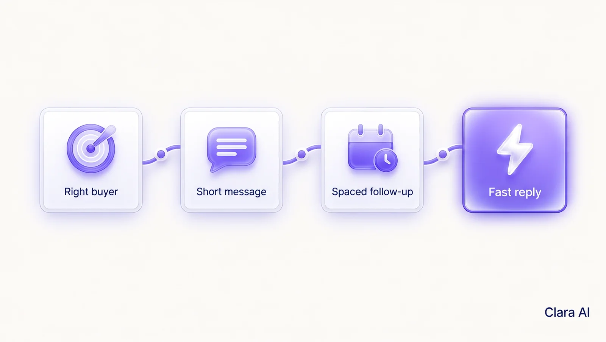

To get more responses on LinkedIn outreach, fix four things in order: send to the right buyers, write a short message about their problem, follow up two or three times, and reply fast when someone answers. Most low response rates come from the list and the message, not from LinkedIn itself.
If your invites are accepted but nobody replies, or nobody accepts at all, the cause is usually easy to find. This guide walks through each fix, gives you a checklist and shows what dated results look like when the basics are done every working day.
Look at where people drop off before you change anything. There are three places a prospect can say no without telling you:
Find your weak step by counting people reached, acceptances, replies and booked calls for the last month. Fix the earliest weak step first, because fixing a later one cannot help people who never got that far.
Targeting is the biggest lever. A perfect message sent to the wrong person still gets ignored. Write down your buyer in one line: role, industry, company size and the problem they have today. Then check each profile against it.
A smaller, sharper list almost always beats a bigger, vague one. It also keeps your volume modest, which is safer for your account.
Write the first message for a busy person reading on a phone. Keep it to three or four short lines and make it about them. A simple structure works:

Skip the pitch deck, the long company history and the "quick 15 minutes" request in the first note. Those belong later, once someone has shown interest. Never claim results you cannot show with a date.
Most replies come after the first nudge, not the first message. People are busy and your note may simply have been buried. A good rhythm is:
Then stop. Stop immediately when someone replies, even with a no. Pushing past a no damages your name and can lead to reports, which puts your account at risk.
Speed matters more than polish. A reply that arrives within a few hours feels like a conversation, while one that arrives three days later feels like a sales process. Decide in advance who answers, and what the next step is: a question, a short call or a resource.
Sort replies the same day into interested, not now and not a fit. Reply to interested people first, set a reminder for "not now", and thank the rest politely. This is the step teams most often drop when they are busy.
| Step | What to check | Sign it is working |
|---|---|---|
| Targeting | Every person fits your one-line buyer profile | Acceptance rate rises |
| Profile | Headline says who you help and the result, photo is clear | More people accept without a note |
| First message | Three or four lines, about them, one light question | More real replies per acceptance |
| Follow-up | Two or three spaced notes, then stop | Replies after the first nudge |
| Reply speed | Warm replies answered the same day | More conversations turn into calls |
| Volume | Modest daily numbers, no identical blasts | No warnings from LinkedIn |
For a wider look at how booked calls happen, read how to book B2B sales meetings on LinkedIn. If you are weighing who should run all this, see LinkedIn outreach agent vs SDR hire.
It can, because the steps above are repeat work that people drop when they get busy. A well-run AI LinkedIn Outreach Agent keeps the list tight, writes each note from facts you approve, follows up on schedule and sorts replies the same day. Warm ones reach you on WhatsApp, so you take the calls.
What it cannot do is fix an unclear offer. If you cannot say in one line who you help and why, write that first. For more on this, see LinkedIn AI lead generation.
Clara AI is a 14-person AI team that builds and runs agents for 19 businesses. We set up the AI LinkedIn Outreach Agent and run it for you, so you do not need a tech team or a new hire. A person on our team checks the work, and warm replies reach you on WhatsApp. Tell us what your business does and the goal for the agent, and we aim to show you a first demo within 7 days.
If buyers also find companies like yours through Google or ChatGPT, our AI SEO Agent publishes a new post on your site every day. Need something else automated? See our custom AI agents.